Hahn-Bin at MoMA - "Soliloquy for Andy Warhol"
───
"Blood, Sweat, Tears and Tchaikovsky" at Lincoln Center
The New York Times
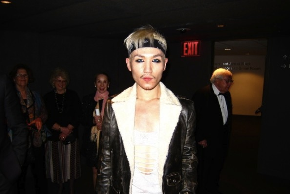
Hahn-Bin post-performance (Photo: Derek Blasberg)
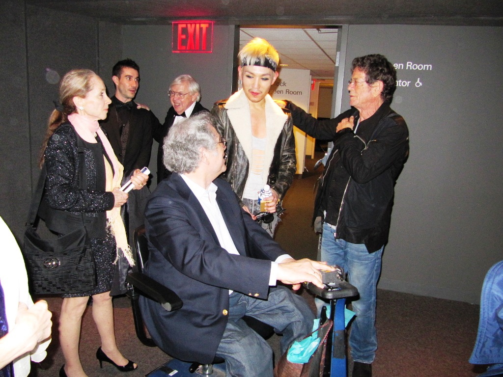Hahn-Bin with Lou Reed and Itzhak Perlman
───
NOWNESS - "The Renaissance of Hahn-Bin"
───
Yoko Ono's Meltdown Festival - BBC
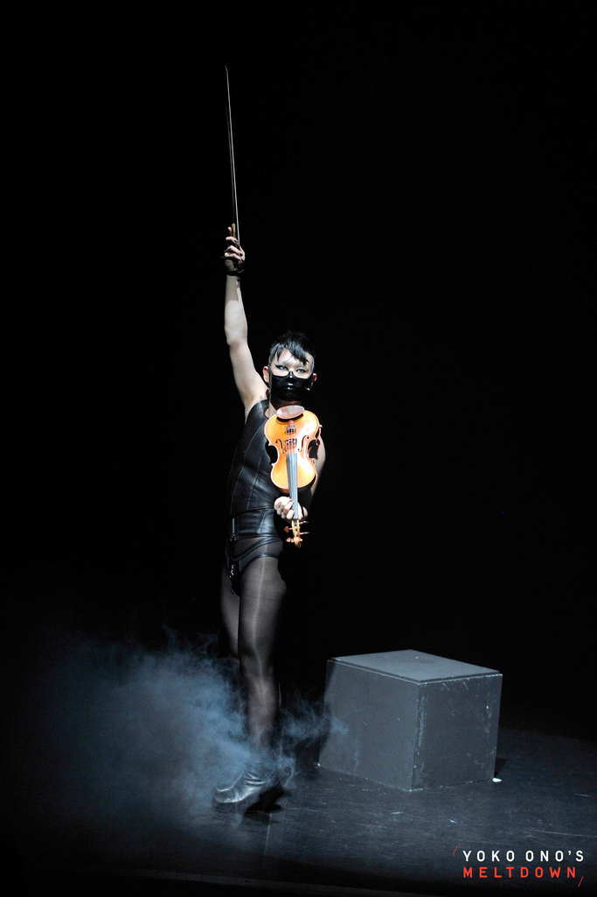
bbc.co.uk
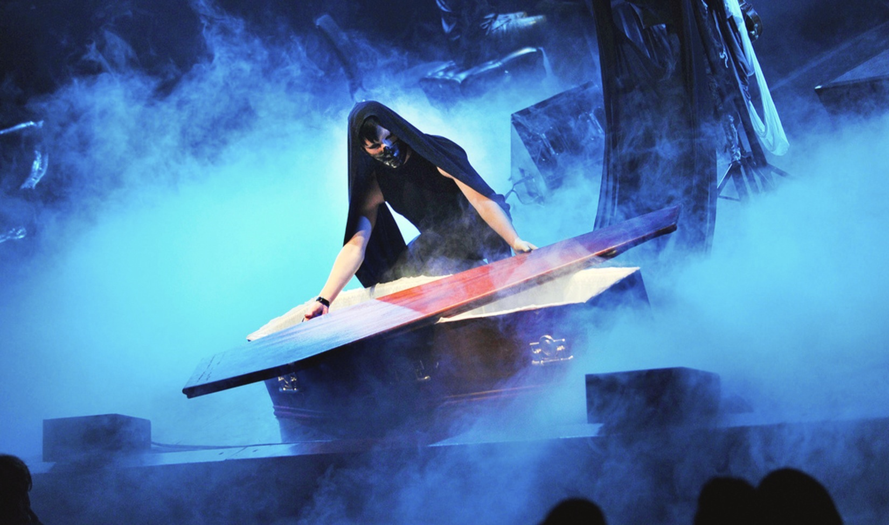
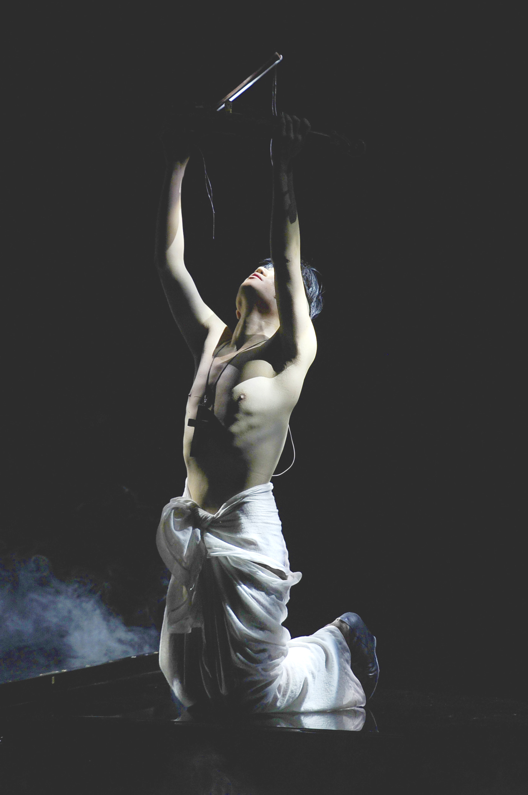
Queen Elizabeth Hall, Southbank Centre
London, U.K.
───
"No. 24" - Myspace/MTV
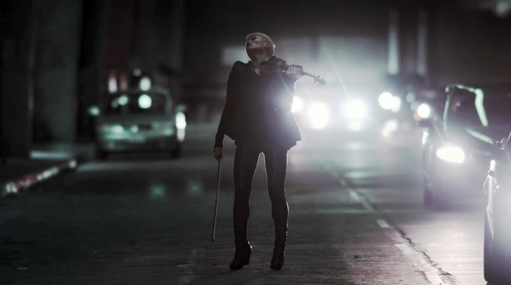
Directed by Christian Weber
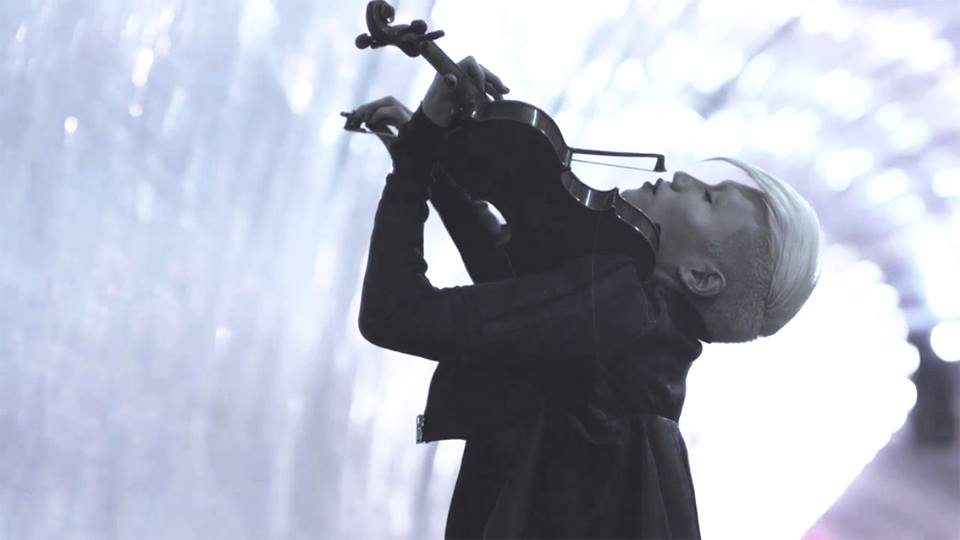───
Hahn-Bin at Carnegie Hall - NBC Today Show
───
Young Frankenstein from "Till Dawn Sunday"
───
Vogue.com - Backstage with Hahn-Bin
───
Janáček from "HAZE" - Age 16
───
Tzigane at MoMA - Artforum
───
The New York Times - "Hahn-Bin Straddles Classical Music and Fashion"
───
Zigeunerweisen from "Till Dawn Sunday"
───
Hahn-Bin for i-D Magazine
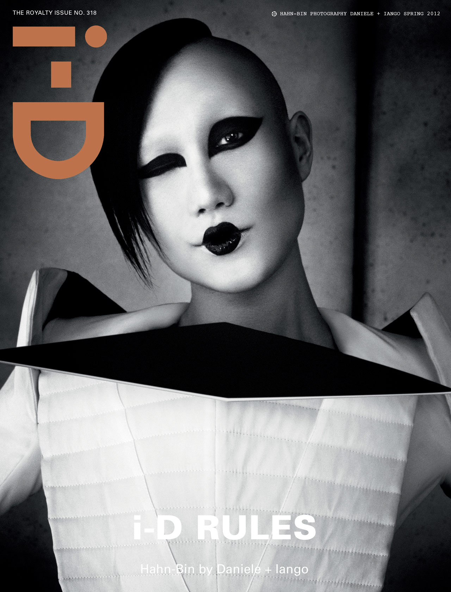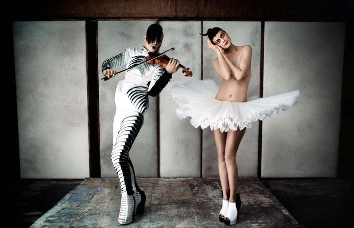
i-D Magazine - "The Royalty Issue"
(Photo: Daniele + Iango)
───
Sibelius in Germany - Age 14
───
The New Yorker - "Eye on Culture: Hahn-Bin"
───
Carmen Fantasy - KBS New Year's Concert
───
Prokofiev's Romeo & Juliet - Age 16
───
Hahn-Bin by Bruce Weber for Vogue Spain
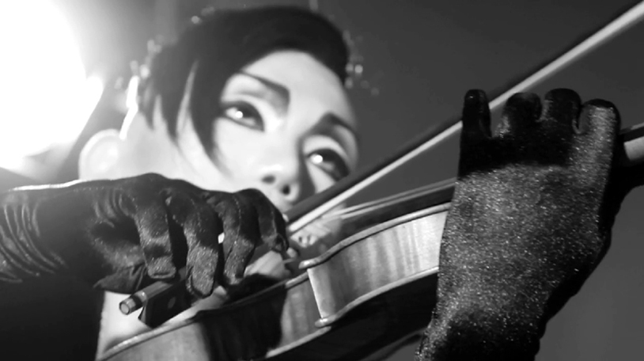

───
"The Five Poisons" - Rubin Museum of Art in New York
Chopin - Nocturne in C# minor
Lutosławski - Subito
Dvořák - Songs My Mother Taught Me
Debussy - La Plus Que Lente
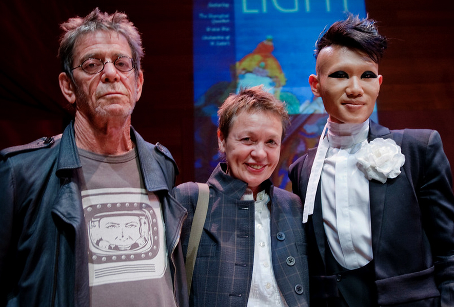───
Hahn-Bin in Seoul - Age 17
───
Madonna - "Beautiful Killer"
───
Age 11 - Encore School for Strings
───
42nd GRAMMY Awards for Isaac Stern - Age 12
"Salute to Classical Music" honoring Isaac Stern
The Biltmore, Los Angeles
───